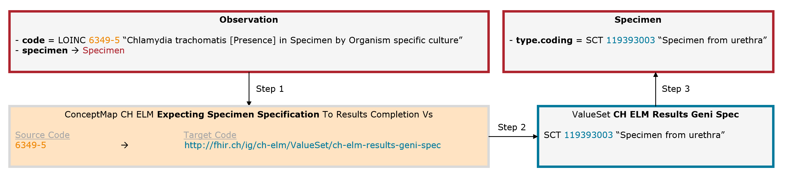
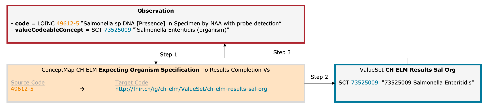

CH ELM (R4)
1.9.0 - release

CH ELM (R4)
1.9.0 - release

This page is part of the Observations of notifiable communicable infectious diseases (v1.9.0: Release) based on FHIR (HL7® FHIR® Standard) R4. The current version which supersedes this version is 1.11.0. For a full list of available versions, see the Directory of published versions
The website of the Federal Office of Public Health (FOPH) (EN, DE, FR, IT) provides further documentation on infectious diseases requiring notification. The most important points for the implementation of this FHIR exchange format are included here.
Please visit the FOPH website to access the most recent documents in the desired language (EN, DE, FR, IT) for each topic.
The reporting obligation is the key systemic element for the surveillance of communicable diseases in Switzerland. Notifiable laboratory findings must comply with the legal provisions regarding reporting criteria, reporting deadlines and reporting data in accordance with the Ordinance of the FDHA on the Reporting of Observations of Communicable human diseases (SR 818.101.126) (DE, FR, IT).
Depending on the organism (leading code), the requirement for how the patient’s personal data, such as name or address, (e.g. Ernst Karl Tanner, Tannenstrasse 10a, 3000 Bern) is reported varies. There are different patient schemas to be used:
The complete overview of which characteristics are used for which organisms can be found in the ConceptMap CH ELM Results To FOPH Patient Name Representation and in the Ordinance of the FDHA on the Reporting of Observations of Communicable human diseases (SR 818.101.126) (DE, FR, IT).
The Laboratory Study Type indicates which type of test has been performed. It is indicated via the composition.section.code and allows for distinction between FHIR documents containing organism detection results from documents containing either genotype- or susceptibility results. The composition.section.code also defines which valueset has to be used for the observation.code (leading code). The available composition.section.codes are defined in the valueset CH ELM Lab Study Types.
The table below lists the composition.section.code with references to FHIR ex-ample documents and the depending observation.code-valuesets:
| Laboratory Study Type | composition.section.code | Example | valueset to be used for the observation.code (leading code) |
|---|---|---|---|
| Organism detection (non-genotype/non-susceptiblity) | LOINC 18725-2 (Microbiology studies (set)) |
1Doc - Neisseria Gonorrhoeae | CH ELM Results Laboratory Observation |
| Susceptibility/Resistance detection | LOINC 18769-0 (Microbial susceptibility tests Set) |
61Doc - Tuberculosis Susceptibility | CH ELM Results Laboratory Observation Susceptibility |
| Genotype/mutation detection | Snomed 726528006 (Genotyping (qualifier value)) |
63Doc - Tuberculosis Genotyping | CH ELM Results Laboratory Observation Genotyping |
It is not possible to mix organism-detection results, genotype (mutations) and susceptibility results within the same FHIR document. Use separate FHIR documents for each laboratory study type with its corresponding composition.section.code.
Important: in the CH ELM Lab Project, almost every FHIR document is expected as of Lab Study Type “Microbiology studies (set)” (LOINC 18725-2). Only laboratories performing genotype or susceptibility tests for Mycobacterium tuberculosis or carbapenemase producing enterobacteriaceace send their results as Lab Study Type “Genotyping” resp. “Microbial Susceptibility tests Set”.
The performed laboratory test is represented by a so called leading code from the valueset ValueSet CH ELM Results Laboratory Observation containing codes from the LOINC and SNOMED codesystem. The leading code reflects a 4-axis model and laboratories are requested to choose the code that corresponds to the specific parameters of the performed laboratory test. Ideally, the chosen code covers all 4 axes.
Example Neisseria gonorrhoeae: The leading LOINC code 697-3 Neisseria gonorrhoeae [Presence] in Urethra by Organism specific culture covering all 4 axes:
Important note:
The ValueSet CH ELM Results Laboratory Observation is a selection of LOINC or SNOMED codes related to notifiable diseases and their legal basis. The ValueSet can be adapted according to laboratory-specific needs - please contact the FOPH in this regard.
If the leading code does not cover all axes, the missing axis must be completed by an additional code.
In some cases, the collection material must be explicitly specified.
Example Chlamydia trachomatis: The leading code (Observation.code = LOINC 6349-5) is completed by an additional code for the collection material (Specimen.type = SNOMED CT 119393003).

Fig. 7: Schematic illustration of the mechanism for the expecting specimen specification (for simplicity, only the relevant elements are shown)
In some cases, an additional organism must be specified. Example: Salmonellosis. The leading code (Observation.code = LOINC 49612-5) is completed by an additional code for the organism (Observation.valueCodeableConcept = SNOMED CT 73525009).

Fig. 8: Schematic illustration of the mechanism for the expecting organism specification (for simplicity, only the relevant elements are shown)
Depending on the leading code different interpretation codes are allowed. The ConceptMap specifies which values from which ValueSet are allowed (e.g. for Neisseria gonorrhoeae the ValueSet: CH ELM Interpretation Codes Positive is specified, which allows only a positive interpretation code to be specified).
In cases where certain test results like physical quantities, sequencing-/typing results etc. or a series of test values with their associated measuring units and interpretations are to be transmitted, a specific observation profile is expected depending on the leading code. The ConceptMap defines which profile has to be considered.
The exchange format defines the FHIR document for reporting to the FOPH so that one document per organism per patient is submitted.
For organisms of the mycobacterium tuberculosis complex and for carbapenemase producing enterobacteriaceae, resistance mutations (genotyping) and antibiotics susceptibility (antibiogram) results are reported by (specialized) laboratories.
Resistance and susceptibility tests cover multiple mutations/antibiotics and often generate multiple results that can be reported in the same document. Such documents differ from usual laboratory reports in two ways:
| “component” : [ | ||
|---|---|---|
| { | ||
| code | code specifying the mutation or antibiotics | |
| interpretation | indicates, whether a specific mutation (POS/NEG) or antibiotics-resistance was found (Susceptible/Resistant) | |
| valueQuantity | if required, includes a quantity value like the applied antibiotics concentration. Otherwise indicate the dataAbsentReason-element. | |
| dataAbsentReason | if no valueQuantity is required/present, then the dataAbsentReason element must be present | |
| }, | ||
| {…} | repetition of the component-elements as required | |
| ] |
See the examples 61Doc - Tuberculosis Susceptibility and 63Doc - Tuberculosis Genotyping for how to implement this FHIR resource.
Important points: